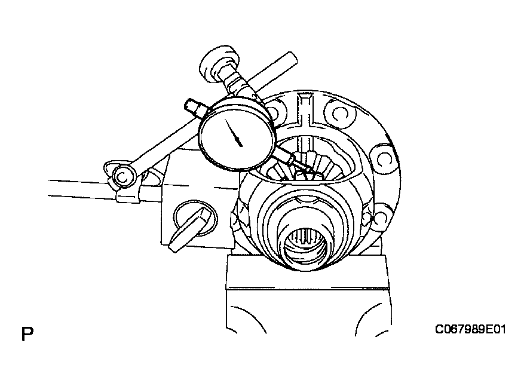
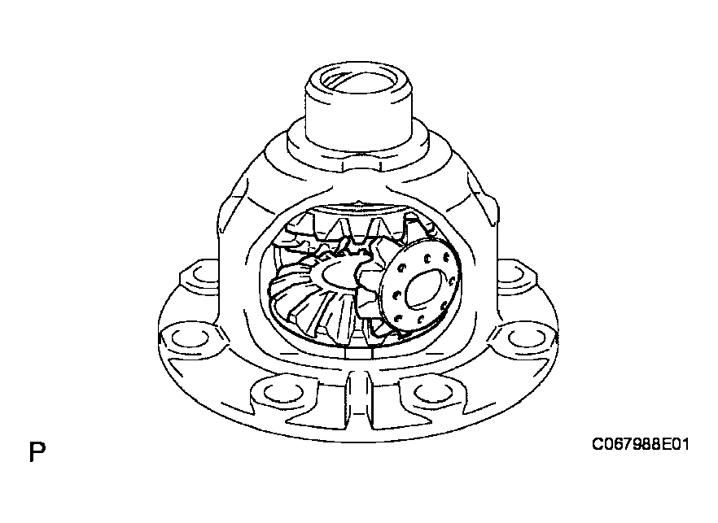

Differential Case: Disassembly
- REMOVE SPEEDOMETER DRIVE GEAR
- Remove the drive gear from the front differential case.
- REMOVE FRONT DIFFERENTIAL RING GEAR
- Put matchmarks on the gear and front differential case.
- Remove the 8 bolts.
- Using a hammer, tap out the front differential ring gear from the case.
- INSPECT FRONT DIFFERENTIAL SIDE GEAR BACKLASH
- Fix the front differential pinion to the front differential case side. Using a dial indicator, measure the gear backlash.

Courtesy of © TOYOTA, LICENSE AGREEMENT TMS1002Standard backlash: 0.05 to 0.20 mm (0.0020 to 0.0079 in.)
If the backlash is not as specified, replace the pinion thrust washer and side gear thrust washers.
- Fix the front differential pinion to the front differential case side. Using a dial indicator, measure the gear backlash.
- REMOVE FRONT DIFFERENTIAL PINION SHAFT STRAIGHT PIN
- Using a chisel and hammer, loosen the staked part of the front differential case.
- Using a 3 mm pin punch and hammer, tap out the front differential pinion shaft straight pin from the front differential case.
- REMOVE NO. 1 FRONT DIFFERENTIAL PINION SHAFT
- Remove the front differential pinion shaft No. 1 from the front differential case.
- REMOVE FRONT DIFFERENTIAL SIDE GEAR
- Remove the 2 front differential pinions, 2 front differential pinion thrust washers, 2 front differential No. 1 side gear thrust washers and 2 front differential side gears from the front differential case.

Courtesy of © TOYOTA, LICENSE AGREEMENT TMS1002HINT:
Revolving the front differential pinion, remove the 2 pinions and 2 side gears.
- Remove the 2 front differential pinions, 2 front differential pinion thrust washers, 2 front differential No. 1 side gear thrust washers and 2 front differential side gears from the front differential case.